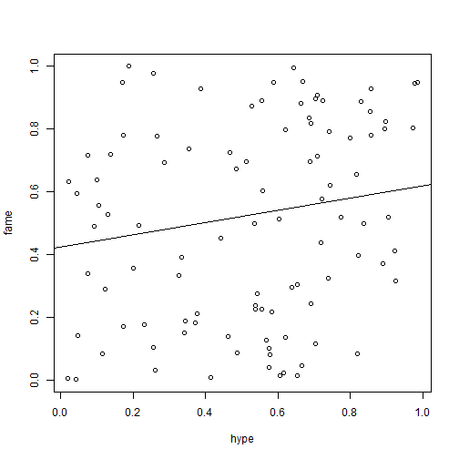

Everyone knows data science is super important today and tomorrow! With a game even kids and other non science type people can do some science! Compete for points while fitting points! That's the point!
mike
science
Everyone knows data science is super important today and tomorrow! With a game even kids and other non science type people can do some science! Compete for points while fitting points! That's the point!
Finally you can win against someone with less science. Veteran data plotters can adjust to minimize error, while ordinary people are confused.
rdat <- data.frame( runif(100), runif(100) )
plot(rdat, xlab="hype", ylab="fame")
abline(lm(rdat))
 Sample game level!
Gamify all the things! With the sucess of this pilot game, more will come!
If playing video games against kids teaches anything, it says don't underestimate them!
Probably, a lot of lesser known statistics concepts like Simpsons Paradox, can be made into easily learnable game memes.
Buy this! ( it's free )